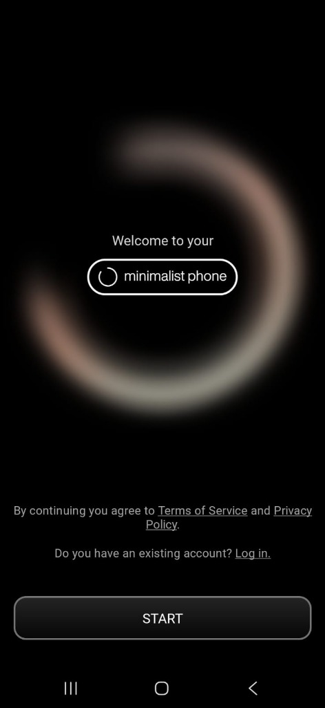
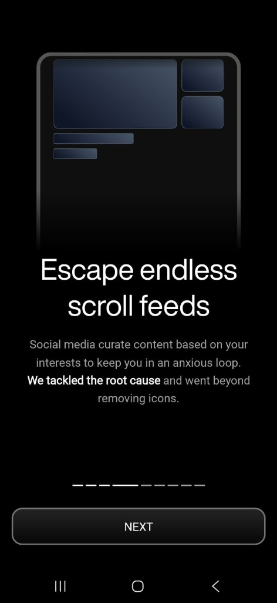
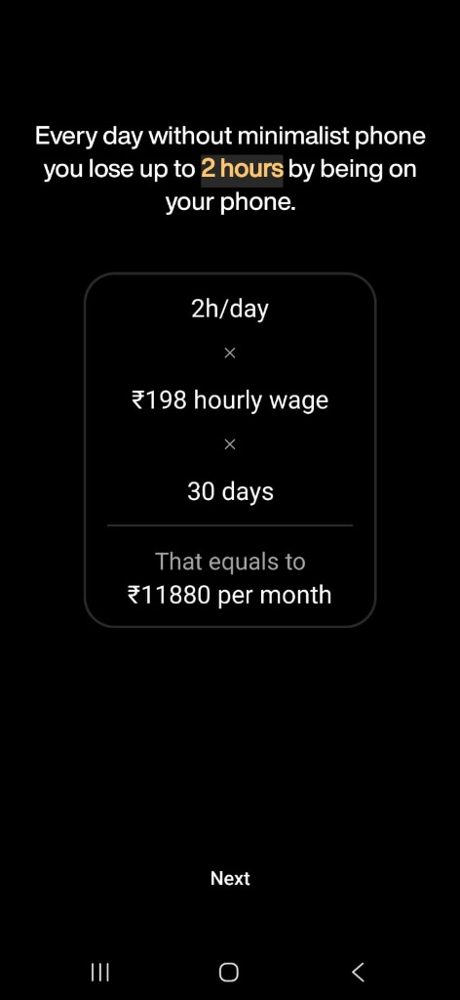
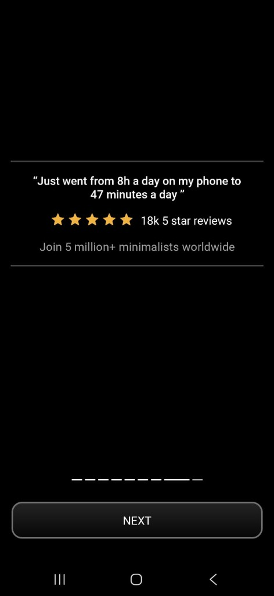
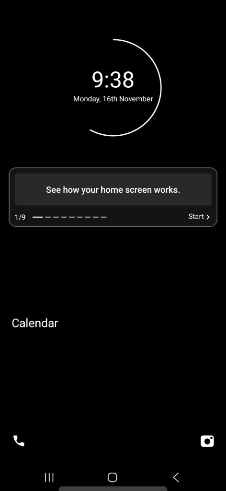
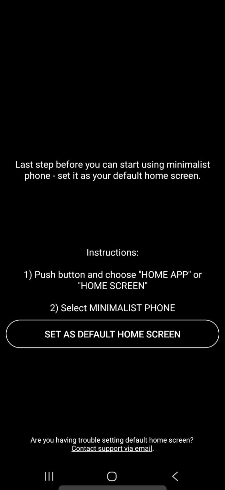
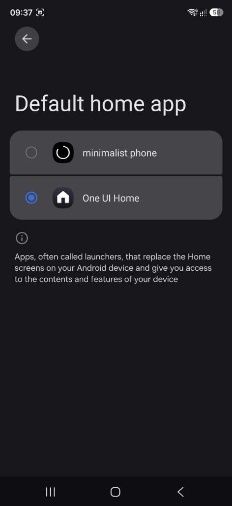
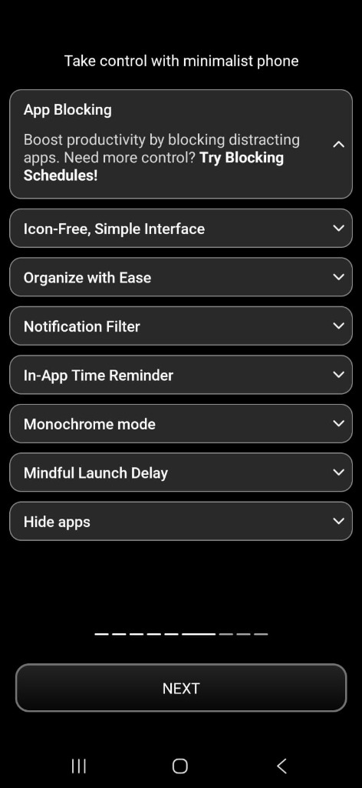
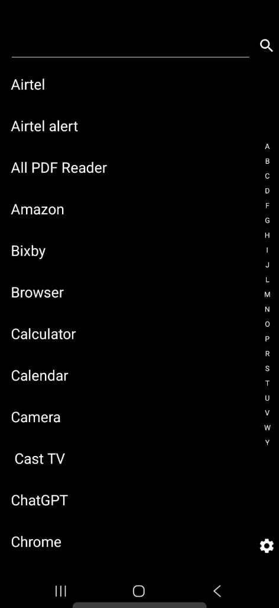
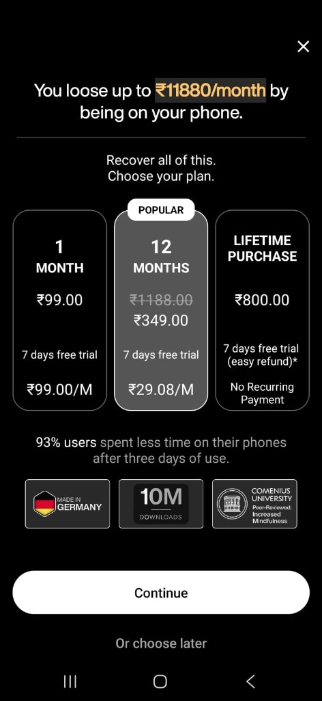

Download the official minimalist phone: digital detox app from the Google Play Store on your Android device. When you launch the app, it introduces the core psychological philosophy that distinguishes it from standard screen-time trackers.

Welcome Launch Screen

Dopamine Intervention Philosophy
Figure 5.1: Initial setup and philosophy. Rather than merely tracking hours or setting easily-dismissed popups, minimalist phone removes the visual candy (saturated icons and badges) that drives impulsive unlocks.
Key insights behind the setup:
- Tackling the Neurological Root Cause: Social media applications are deliberately engineered with high-contrast colors and red badge counters to stimulate dopamine release. Minimalist phone replaces this sensory overload with a calm, monochrome typographical interface.
- Privacy Guarantee: All launcher functions operate locally on your phone. Minimalist phone requires zero keystroke logging and sends no private personal data to external tracking clouds.
- Getting Started: Review the Terms of Service and Privacy Policy, then tap the prominent black START button to begin the guided configuration.
Before changing your interface, the onboarding guide helps you quantify the invisible toll that compulsive phone checking takes on your academic studies and personal budget.

Quantifying Daily Lost Hours

Achievable Student Habit Reduction
Figure 5.2: Facing the reality of digital distraction. An average student loses 2 to 3 productive hours each day to aimless phone checks.
Understanding your targets:
- The Real Opportunity Cost: Losing 2 hours per day equals 60 lost hours every month. For university students, that represents the equivalent of an entire semester module's revision time or substantial part-time earnings.
- Realistic Habit Transformation: Reviews from over 5 million users show participants cutting their screen time from 6–8 hours down to 45–60 minutes daily within 14 days of eliminating home screen visual stimulation.
- Tap NEXT to review the specialized productivity tools included in the launcher.
Minimalist phone integrates eight dedicated focus tools directly into your handset's operating environment, replacing the need for multiple fragmented third-party apps.

Integrated Wellness Toolkit Overview
Figure 5.3: Core feature suite. Tap each accordion item to preview app blocking schedules, mindful launch delays, notification filtering, and app hiding.
The 8 essential tools for undergraduates:
- App Blocking & Schedules: Lock down distracting social apps completely or configure custom blocking timetables during university lecture hours.
- Icon-Free, Simple Interface: Eliminates vibrant app icons that trigger subconscious taps.
- Organize with Ease: Quickly navigate apps via alphabetical grouping and real-time text search.
- Notification Filter: Batches incoming notifications into calm, scheduled delivery summaries rather than chiming every 3 minutes.
- In-App Time Reminder: Displays a gentle reminder after 15 minutes of continuous usage, preventing accidental doomscrolling binges.
- Monochrome Mode: Employs true AMOLED pitch black to relax eye strain and reduce battery consumption.
- Mindful Launch Delay: Enforces a 15-second breathing pause before high-distraction apps open, giving your rational brain time to cancel.
- Hide Apps: Completely hides games and time-sink apps from your application list while keeping them installed on your device.
To transform your daily experience, minimalist phone must become your default home application so every time you unlock your phone or press the home button, you are greeted by calm typography rather than a grid of icons.

Launcher Activation Instructions

Android System Home App Selector
Figure 5.4: Activating the minimalist launcher. You can switch back to your stock launcher (such as Samsung One UI or Pixel Launcher) at any time.
Step-by-step activation:
- On the setup screen, tap the black SET AS DEFAULT HOME SCREEN button.
- Android's native "Default home app" system settings menu will appear.
- Tap the radio button next to minimalist phone to select it as your primary home launcher.
- Reassurance for Students: Setting a new launcher does not delete any data, photos, accounts, or installed applications. It merely changes how your home screen is rendered. You can switch back anytime in 2 taps via Settings > Apps > Default Apps > Home App.
Once activated, your smartphone transforms into a quiet, purposeful workstation. The cluttered multi-page home screen is replaced by a sleek, black typographic display with an intelligent tutorial walkthrough.

Monochrome Home Screen & Battery Ring

Alphabetical Text-Only App Drawer
Figure 5.5: Your new quiet phone environment. The home screen features an interactive 9-step tutorial, clean digital clock, and quick phone/camera access, while the app drawer lists apps in plain text.
How to navigate your new interface:
- Follow the Interactive Tutorial: Tap Start > on the "See how your home screen works (1/9)" tooltip to learn intuitive swipe gestures.
- Pin 4–6 Essential Academic Tools: Long-press key study apps (e.g., Calendar, Notion, Canvas LMS, Calculator) to pin them as text links on your main home screen. Strictly avoid placing social media feeds on this screen.
- The Alphabetical Drawer: Swipe left to open the full app list. Notice that every app (Airtel, All PDF Reader, Amazon, Calculator, Calendar, Camera, ChatGPT, Chrome) is displayed in neutral white text on pure black with zero colorful icons or red alert badges.
- Intentional Searching: Slide your thumb along the vertical A–Z sidebar or tap the search icon at the top to type what you need. This eliminates muscle-memory thumb tapping and ensures you only open apps with conscious purpose.
Minimalist phone offers transparent, honest pricing backed by peer-reviewed academic research from Comenius University on increased student mindfulness.

Transparent Pricing: Monthly, Annual & Lifetime Tiers
Figure 5.6: Plan selection screen. Notice the peer-reviewed Comenius University mindfulness badge, Made in Germany engineering, and the crucial 'Or choose later' student escape link.
Budget guidance and smart tips for students:
- The "Or Choose Later" Shortcut: If you are an undergraduate on a tight budget or want to evaluate the launcher before making any financial commitment, tap the discreet "Or choose later" link beneath the Continue button. This allows you to explore the launcher immediately without entering billing information.
- Full 7-Day Free Trial: All three subscription tiers (1 Month at ₹99, 12 Months at ₹349, and Lifetime at ₹800) come with an unrestricted 7-day free trial and straightforward refund policies.
- Academic Validation: The app has surpassed 10 million downloads and was evaluated in a formal clinical trial by Comenius University, proving measurable increases in mindful focus and reductions in impulsive smartphone dependency.
- Free FOSS Alternatives: If you love the text-only minimalist concept but cannot afford a subscription after your trial, check out free open-source alternatives like Olauncher or Niagara Launcher on F-Droid, or pair the setup with native Android Digital Wellbeing (Guide 2).